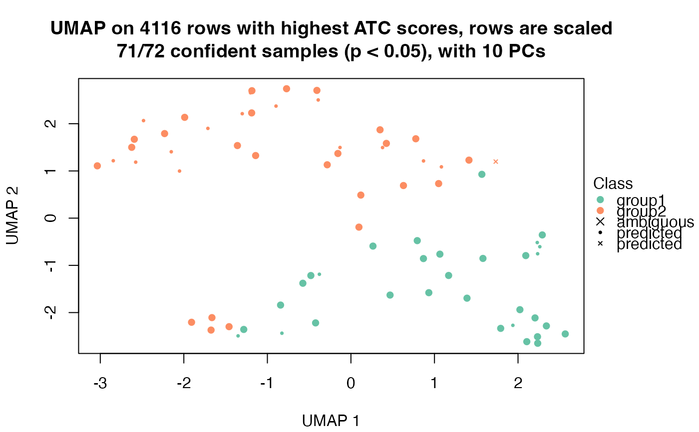
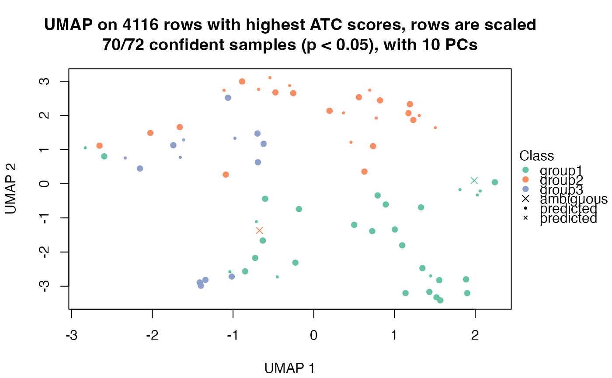

dimension_reduction-DownSamplingConsensusPartition-method.RdVisualize samples (the matrix columns) after dimension reduction
# S4 method for DownSamplingConsensusPartition dimension_reduction(object, k, top_n = NULL, method = c("PCA", "MDS", "t-SNE", "UMAP"), control = list(), color_by = NULL, internal = FALSE, nr = 5000, p_cutoff = 0.05, remove = FALSE, scale_rows = TRUE, verbose = TRUE, ...)
| object | A |
|---|---|
| k | Number of subgroups. |
| top_n | Top n rows to use. By default it uses all rows in the original matrix. |
| method | Which method to reduce the dimension of the data. |
| color_by | If annotation table is set, an annotation name can be set here. |
| control | |
| internal | Internally used. |
| nr | If number of matrix rows is larger than this value, random |
| p_cutoff | Cutoff of p-value of class label prediction. Data points with values higher than it will be mapped with cross symbols. |
| remove | Whether to remove columns which have high p-values than the cutoff. |
| scale_rows | Whether to perform scaling on matrix rows. |
| verbose | Whether print messages. |
| ... | Other arguments. |
This function is basically very similar as dimension_reduction,ConsensusPartition-method.
No value is returned.
#> use UMAP#> use UMAP